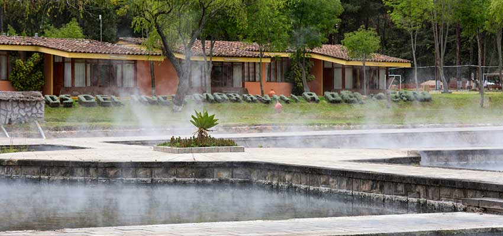

Baños del Inca
A 15 minutos de la ciudad de Cajamarca, se encuentran los Baños del Inca.Lleva este nombre porque sus aguas termales, de origen volcánico, eran visitadas por el inca Atahualpa para relajarse y recuperar fuerzas.En la actualidad, es un balneario medicinal que atrae a turistas nacionales e internacionales. Sus aguas alcanzan temperaturas de 72 °C (158 °F) y contienen sodio, hierro, magnesio, potasio, calcio, litio, estroncio y sílice. Por estas propiedades químicas ayudan al tratamiento de enfermedades reumáticas, bronquiales, nerviosas y de la piel. Asimismo, los Baños del Inca ofrecen el servicio de pozas colectivas, pozas individuales, piscinas al aire libre, servicios de masajes, baños sauna que incluyen tratamientos con eucalipto, entre otros. Relajarse en estas aguas terapéuticas es un placer inolvidable.
Datos Utiles
- Se ubica a 6 km al este de la ciudad de Cajamarca (10 min en auto)
- Los Baños del Inca ofrecen servicios de hidromasajes, masajes, saunas, piscinas, pozas y alojamientos.
- La mejor fecha para visitar este manantial natural es de mayo a setiembre.
- Los viajeros, además de relajarse en las pozas medicinales, pueden realizar actividades como caminatas y paseos a caballos.